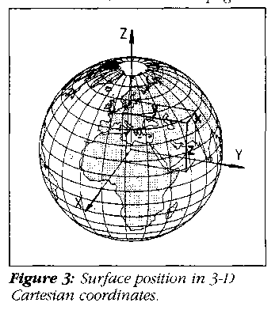

In the early days of computing, the data we worked with consisted of integers, real numbers, and characters. Later, we moved on to time and money data. Today, as we increasingly deal with environmental and other geographic information, we need new ways of looking at spatial data.
For millennia, cartographers have attempted to represent the round Earth on flat maps. The first four decades of geographic information systems (GIS) have attempted to automate this process, typically using a "flat Earth" paradigm of map sheets and two-dimensional coordinates. The result has been an unwieldy collection of complex math, preset views, and location-dependent precision.
An alternative is to model the Earth using a "round Earth" paradigm. In this way, we can roam freely with our geographic applications, modeling surface features without restriction, and calculating spatial relationships with uniform high precision.
In this article we'll demonstrate an approach to representing the location, storage, retrieval, and manipulation of data in terms of its spatial relationships. We'll use elementary trigonometry and three-dimensional vector algebra to develop programs that demonstrate the key ideas. Then we'll build on these concepts to show how you can develop a complete GIS that has unprecedented speed and precision, without the use of a conventional GIS solution.
To illustrate these concepts, let's build a simple geographical atlas that lets you roam anywhere on the globe, viewing surface features at varying scales. In the general case, we would model our geographic features of interest as points, lines, areas, or volumes.
For simplicity, this application will deal only with line objects. The geographic location of a line object can be given by an ordered set of vertex coordinates.
Figure 1 illustrates some sample application objects.
LISTING ONE
provides their numeric specification in the familiar terms of latitude and longitude--the angles that give the location of geographic features relative to the equator and a prime meridian. The frame of reference is geocentric, meaning that the angles are measured from the center of the Earth; see Figure 2. Latitude is labeled phi and longitude is labeled lambda.
While early scientists thought of the planet as a perfect sphere, we now know it is somewhat flattened at the poles, an "ellipsoid of rotation." However, since the eccentricity of the Earth is not great (less than a third of one percent), we'll assume for the moment that the Earth is indeed a perfect sphere.
Since latitudes and longitudes are angles, when we work with them we must be prepared to calculate sines, cosines, tangents, arc tangents, and the like. Even with today's math coprocessors, this can get messy. For instance, have you ever tried to find the tangent of 90 degrees? You will if your application deals with objects in the polar regions. Generally, such calculations lack a geographically uniform distribution of precision. Luckily, a point's location on the Earth's surface can be represented in other ways.
Consider a 3-D geocentric space having three orthogonal axes projecting through the equator and the poles. Call these axes X, Y, and Z. Now we can locate a point on the surface with the three coordinates x,y,z; see Figure 3. The X axis projects through the Atlantic ocean just off West Africa, the Y axis projects through the Indian ocean just west of Sumatra, and the Z axis projects through the North Pole. The pictured surface point P(x,y,z) might be somewhere in northern Afghanistan.

Given the 3-D space just described, there's another way to describe the location of a surface point. Instead of referring its coordinates directly, we could describe the vector perpendicular to the surface at that point. For a perfectly spherical Earth, this normal would pass through the center. It has unit length, and its direction is defined by the angles formed between it and the X, Y, and Z axes. These angles are called direction angles.
We'll be working with the cosines of the direction angles--direction cosines--labeled di, dj, and dk, respectively. The point in Afghanistan can now be referred to as P(di,dj,dk); the point off West Africa has the coordinates (1, 0, 0); the point in the Indian ocean is at (0,1,0); the North Pole point is at (0,0,1); and the South Pole point is at (0,0,-1); see Figure 4.
Recording direction cosines as double types in C typically provides sub-millimetric precision. This usually surpasses the precision of your very best field data.
LISTING TWO
shows some geometric vector-algebra functions and their supporting structures and constants.
Most developers are familiar with latitude and longitude. In addition, there are "flat-Earth" coordinate systems such as UTMs and State Plane that are used by surveyors and map makers. Few, however, are familiar with direction cosines. Consequently, if our new system is to be of any use, we'll need an efficient method of converting between direction cosines and these other coordinates. For simplicity, we'll restrict input to latitudes and longitudes. We begin by converting a file of geographic data to direction cosines.
At first glance, using direction cosines to locate a point on the Earth's surface seems inefficient, since we're trading two items (latitude and longitude) for three. But in modeling geographic objects, we often have multiple locations associated with specific objects. For example, a line object such as a coastline, river, or road is usually modeled as an ordered sequence of connected vertices. In such instances, we might select a single, "central" location and relate all the associated vertices to it. But will this "differential" position encoding be effective?
In developing planar projections, map makers look for the recognizability of shapes (conformity) and the uniformity of scale in all directions (isometry). One of their best efforts is the stereographic projection which, over moderate distances, produces a view of the Earth that's both conformal and isometric. (Despite its name, this projection of 3-D onto 2-D provides no depth perception.)
If an object is restricted in size, it can be represented in the plane of a stereographic projection without significant distortion. This means we can use a specific scheme of differential location recording in which each vertex of the line is encoded as a stereographic planar displacement from some central position. As such, this differential value will have just two components, say dx and dy.
Using only short int types for dx and dy, resolution of better than a meter can be maintained for surface objects as large as ten kilometers in extent. For better resolution, we can use float or long int types; for poorer, we can use signed char.
So, typically, we'll have traded in three doubles for two short ints, a significant reduction in storage requirements. We refer to these differentially encoded coordinates as local coordinates. The full, three-element direction cosine global coordinates can easily be reconstructed at any time, using only elementary vector algebra.
Since we're creating an application to select and display terrestrial "objects," it makes sense to store the data externally under some kind of object-oriented scheme. But how should the objects be indexed?
Conventional wisdom suggests that we index our data on the basis of decomposition (or hashing) of the object's coordinates. For this application, however, let's try something different.
First, let's establish a file as the general repository for the local coordinates of all the vertices of all of the objects modeled. We'll provide access to the individual parts of this file using file pointers.
Next, let's set up an index file of object headers. Each header will hold the object's identifier, the global coordinates of its center, a file pointer to the local coordinates of its vertices, and the vertices count. The object's identifier can serve as a link to its other attributes (if any). The header will also contain an estimate of the object's geographic extent, described shortly.
When we load the database with an object, we can determine its "center" by calculating the "vector mean" of the direction vertices' cosines. We can then use this center to differentially encode coordinates for the vertices.
Because this application will let you zoom in and out through a wide range of scales, we're providing two classes of line objects: those required for close-ups (dense) and those needed only for wide-area presentations (sparse). Since the application is to be interactive, we'll want to reduce unnecessary data retrieval and processing time (especially if we don't have floating-point hardware).
To determine if objects are "onscreen" or not, the application will need to know their geographic extents. Using vector algebra, we can calculate these as surface distances, for which we'll need arc (or great circle) distances. While we're loading objects into the database, it will prove useful to calculate and store the maximum great circle distance that any vertex is displaced from the object's center; see Figure 5.
LISTING THREE
and the called functions in
LISTING TWO
provide code to read and convert location data to direction cosines, differentially encode them, calculate distances, and build a location-dependent database.
Our application provides a window on the world, so to speak, by displaying objects that come within a field of view you select. A view is defined in terms of location and scale. The location of the display's center can be expressed as a latitude and longitude. Scale can be expressed as the ratio between a distance on the screen and a distance on the ground. Figure 6 illustrates such a window, while
LISTING FOUR
and the called functions in
LISTING TWO
show the code needed to establish an initial view and scale.
Now that field of view is defined, we can locate objects that might come into that field using distance calculations. If you think of the display as circular rather than rectangular, then you can calculate a maximum radius for the display. You can go to the database and select those objects that might be displayed. (The graphics-library clipping function will fine-tune the selection later.)
The header for each object contains the maximum distance of any vertex from the object's center. This was calculated and stored when we loaded the database. So, to determine if the object might be in the field of view, simply: 1. find the distance between its center point and that of the display; 2. subtract the maximum radius for the object; and, 3. subtract the maximum radius for the display.
If the result is negative, you'll want to retrieve the object from the database for further processing; otherwise, ignore it. Figure 7 illustrates both of these conditions.
LISTINGS FOUR
and
TWO
provide code to make the selection and bring the selected objects into memory.
Next we need to project each object's vertices into the plane of the display (projection plane), which is generally not the same as that of the display. For simplicity, we'll go back to the sphere and reproject the object's vertices using, for this example, the stereographic projection. Other projections--gnomonic, orthographic, Mercator, and the like -- might also be used. Gnomonic is the easiest, but stereographic looks better and is worth the effort.
LISTING FOUR
and
LISTING TWO
give the code to perform the projections and draw the objects. (For more about map projections, see "Map Projections Used By The U.S. Geological Survey, Sec. Ed.," Geological Survey Bulletin 1532, Department of the Interior, U.S. Government Printing Office, Washington, DC, 1984.)
Suppose you want to change the scale or view of the display. Simply modify these items and repeat the previous operations. A simple outside loop that changes the scale or map center point will work.
LISTING FOUR
shows code to accept changes via the sign and arrow keys.
That completes our simple atlas application. Even with the slowest PC, you can now inspect the world's coastlines without preselection of view or scale. To more fully exercise the system, raw world-coastline data (in ASCII form) is available for download, together with a prebuilt world-coastline database (in binary); an executable View program in DOS real mode, compiled for VGA with math coprocessor emulation; and ASCII source code for the programs.
Since the Earth is closer to an ellipsoid of rotation than a sphere, we'll need to extend our vector algebra. The required quadratic vector algebra has been fully implemented in the Hipparchus Geopositioning Model with significant improvements in speed and precision over conventional geodesy methods. (See Geodesy, by Henry D. Bomford, Oxford University Press, 1973.)
For this sample application, we calculated a local center point for each object and then used this to select objects from the database. We also used these center points to encode the large number of vertex coordinates associated with our objects.
Suppose we could precalculate a set of center points that would serve the same purposes for all the objects in the database. Ideally, such a set of center points would provide both fast spatial indexing and a flexible association with objects. In such a spatial index, each indexed database "bucket" would hold some prescribed maximum number of object-defining coordinates. Then we could have geographically large cells for surface regions where we've little or no data and geographically small cells where we have a lot of data.
The Hipparchus Geopositioning Model implements just such a scheme using a flexible partitioning system called a "Voronoi cell structure." Figure 8 shows one such tessellation of the Earth. The structure illustrated would be suitable for indexing population-related data objects. Voronoi cell structures are always global, even if the application is localized. A cell structure is defined by its cell center points. For each cell, the structure includes a unique cell identifier, the global coordinates of the cell's center point, the cell's maximum radius, and an ordered list of neighbor-cell identifiers. The boundaries between cells exist only mathematically.
The special property of the Voronoi cell structure is that any surface point can be classified unambiguously as belonging to one cell or another on the basis of surface distance. A point is always closer to the center point of its "owner" cell than to the center point of any other cell. For a discussion of the Voronoi tessellation of the plane, see Algorithms, Second Edition, by Robert Sedgewick (Addison-Wesley, 1988). For a description of its adaptation to the surface of the ellipsoid, see "Hipparchus Geopositioning Model: an Overview," by H. Lukatela in Proceedings of Auto Carto 8 (American Society for Photogrammetry and Remote Sensing, 1987), and the Hipparchus Tutorial) by Ron V. Gilmore (Geodyssey, 1992).
In the context of a Voronoi cell structure, an object's vertices are associated with their closest-cell center points as well as an object header. Objects can then be defined without geographic size restriction of any kind. Objects can consist of sets of points, lines, or regions spanning any number of cells. Regions can be nonsimply connected: An island group can be modeled as a single object, islands can have interior lakes with islands, and so on. Volumes can be modeled as regions having elevation or depth attributes. Figure 9 shows the intersection of two overlapping region objects in the Voronoi context.
Cell center points rather than object centers are used for the differential encoding of coordinates. Lists are maintained for each case:
For more about these data structures, refer again to "Hipparchus Geopositioning Model: An Overview" and the Hipparchus Tutorial.
When used as an index to objects stored externally, the Voronoi cell structure proves remarkably effective in reducing unnecessary disk accesses. Not only are all the cells containing object data known to the application program, but cells associated with open windows are known as well. As you pan and zoom the window, precise retrieval instructions can be fed to the database.
References to random locations are traced to their owner cells by a geographically direct search route. Ownership of a point by a particular cell is confirmed when a comparison of distances with the cell's immediate neighbor cell center points shows them to be more distant.
In this application, we had to search our entire index to determine which data was to be selected. This was because we knew of no way to map directly from the 3-D ordered domain of our real-world objects into the linearly ordered domain of the computer. But when we associate these objects with a Voronoi cell structure, the situation changes.
The unambiguous classification of object vertices into a specific, linearly ordered structure of cells makes possible the use of hierarchical searches for the data, resulting in significant efficiencies.
Since the order of cell identifiers in a cell structure is irrelevant to its algorithmic operation, cells can be arranged in any order. Therefore, data-access bias can be arbitrarily imposed without affecting the logic of the application.
The demand for efficient handling of crushing volumes of spatial data has arrived. Round-Earth vector algebra and the Voronoi tessellation can be combined to provide unrestricted modeling and efficient manipulation of terrestrial objects. Precise spatial indexing can be provided on the basis of distance calculations rather than coordinate decomposition. Monolithic geographic information systems may soon be history.